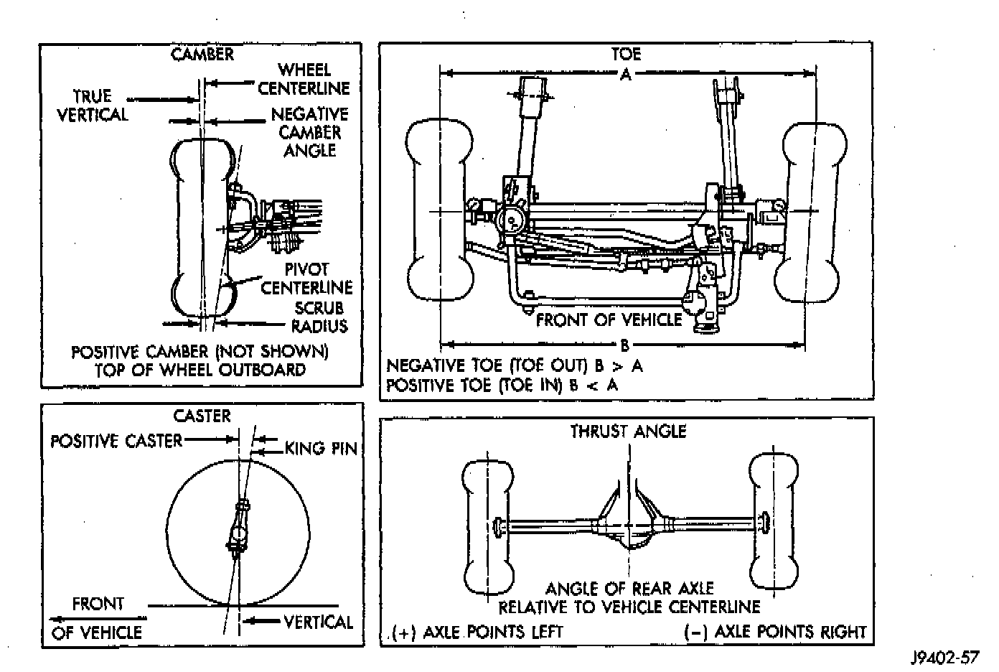

Alignment: Description and Operation
CAUTION: Do not attempt to modify any suspension or steering component by heating and bending.
GENERAL INFORMATION
Wheel alignment involves the correct positioning of the wheels in relation to the vehicle. The positioning is accomplished through suspension and steering linkage adjustments. An alignment is considered essential for efficient steering, good directional stability and to minimize tire wear. The most important measurements of an alignment are caster, camber and toe position.
Caster - is the forward or rearward tilt of the steering knuckle from vertical. Tilting the top of the knuckle rearward provides positive caster. Tilting the top of the knuckle forward provides negative caster. Caster is a directional stability angle. This angle enables the front wheels to return to a straight ahead position after turns.
Camber - is the inward or outward tilt of the wheel relative to the center of the vehicle. Tilting the top of the wheel inward provides negative camber. Tilting the top of the wheel outward provides positive camber. Incorrect camber will cause wear on the inside or outside edge of the tire. The angle is not adjustable, the damaged component(s) must be replaced to correct mix-alignment.
Wheel Toe Position - is the difference between the leading inside edges and trailing inside edges of the front tires. Incorrect wheel toe position is the most common cause of unstable steering and uneven tire wear. The wheel toe position is the final front wheel alignment adjustment.
Steering Axis Inclination Angle - is measured in degrees and is the angle that the steering knuckles are tilted. The inclination angle has a fixed relationship with the camber angle. It will not change except when a spindle or ball stud is damaged or bent. The angle is not adjustable, the damaged component(s) must be replaced to correct misalignment.
Thrust Angle - is the angle of the rear axle relative to the centerline of the vehicle. Incorrect thrust angle can cause off-center steering and excessive tire wear. This angle is not adjustable, the damaged component(s) must be replaced to correct misalignment.